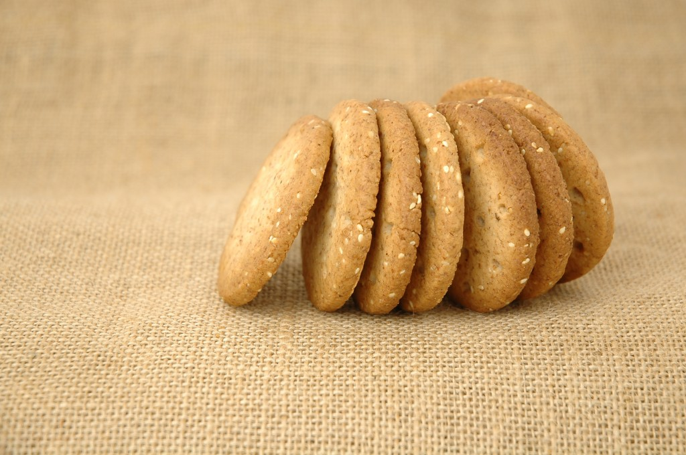

¿Me preguntas que por qué compro arroz y flores? Compro arroz para vivir y flores para tener algo por lo que vivir.
Confucio
Siempre hay una buena ocasión para disfrutar de un dulce casero durante la sobremesa o la hora del café. En LaMejorNaranja hoy queremos daros a conocer un sabrosa receta con la que sorprenderéis a vuestra gente. El azahar, la flor del naranjo, posee un olor intenso y dulce que aportará a las populares pastitas un toque muy especial. ¡Apuntaros esta combinación perfecta de sabor y aroma!
Ingredientes
130g de harina blanca común
16g de maicena
105g de mantequilla ligeramente salada
55g de azúcar
20ml (4 cucharaditas) de agua de azahar
Método de preparación
El primer paso es tamizar la harina y la maicena sobre un recipiente y añadir la mantequilla para amasar todo bien con los dedos.
A continuación, incorporar el azúcar y el agua de azahar, mezclarlo bien hasta conseguir una masa totalmente uniforme. Amasar un poco antes de meterla en la nevera durante unos 30 minutos.
Estirar la masa con el rodillo en una superficie previamente harinada, y recortar círculos con un corta pastas de unos 6cm de diámetro.
Colocar las pastas en una bandeja de horno, ligeramente untada de mantequilla, y hornear a 170ºC durante unos 8 minutos, hasta que las pastas comiencen a coger color por los bordes. Lo ideal es poner el ventilador del horno para repartir el calor.
Por último, dejar primero enfriar las pastitas en la misma bandeja del horno, y posteriormente sobre una rejilla metálica para que acaben de enfriarse bien.

Ya sabéis que LaMejorNaranja os propone a menudo buenas ideas culinarias, siempre exquisitas y sencillas de elaborar. ¿Habéis preparado alguna vez un postre con agua de azahar?


Estimadas amigas Carmen y María Victoria:
Muchas gracias por vuestro comentario y por estar tan atentas. Acabamos de añadir la cantidad de maicena que se nos había pasado por error, disculpadnos 😉
en la receta de galletas de azahar que dais, se os olvido poner la cantidad de maicena que se debe poner.
En los ingredientes de la receta no se indica la maicena y luego en la elaboración sí. ¿Es además de la harina y en ese caso, qué cantidad?
Gracias por vuestros consejos,